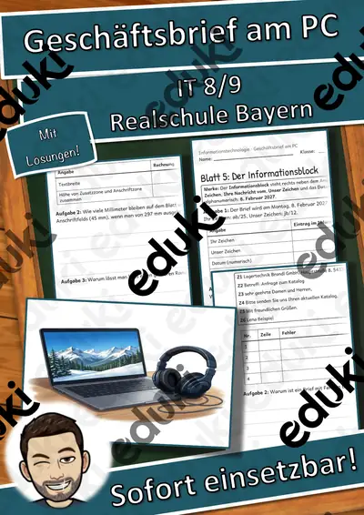
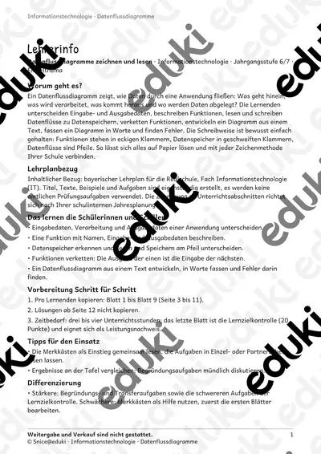

Bemaßung nach Norm – Technisches Zeichnen Klasse 8/9 Mittelschule – Arbeitsheft mit Lösungen
Maßlinie, Maßhilfslinie, Grund-, Form- und Lagemaß: Mit diesem Arbeitsheft bemaßen meine Schülerinnen und Schüler flache Werkstücke Schritt für Schritt regelgerecht. Alle Werkstücke sind im Maßstab 1:1 gezeichnet – die Klasse kann nachmessen.
Dreifach differenziert (★/★★/★★★):
- ★ Maße vorgegeben, mit Merkkästen und Checkliste
- ★★ Maße selbst nachmessen und eintragen
- ★★★ Abschrägung, Rundung, mehrere Bohrungen, Begründungen
Enthalten (18 Seiten):
- Hinweise für Lehrkräfte mit Ablauf, Kopierplan, Lehrplan- und Normbezug
- Lernweg mit Druck-Check (100-mm-Strich)
- Bestandteile einer Bemaßung
- Linienarten nach Norm
- 8 Regeln der Bemaßung mit Richtig-oder-falsch-Karten
- Grund-, Form- und Lagemaß (farbige Merkseite) mit Übung
- Ich bemaße in 3 Stufen mit Checkliste
- Bezugskante
- Bohrungen und Rundungen (Ø und R)
- Symmetrische Werkstücke im Raster
- Maßfehler-Detektiv (6 Fehler)
- Transfer: Kabelhalter selbst zeichnen und bemaßen
- Mein Check (Quiz und Selbsteinschätzung)
- 3 Seiten Lösungen
Passend zum LehrplanPLUS Mittelschule Bayern, Technik Jahrgangsstufe 8 (Regelklasse und M-Zug), Lernbereich Technische Kommunikation, auch zur Wiederholung in Klasse 9. Linien nach DIN EN ISO 128-2, Bemaßung nach DIN EN ISO 129-1, für die Schule vereinfacht.
Alle Zeichnungen sind eigene Vektorgrafiken. Viel Erfolg beim Zeichnen wünscht Snice
FachTechnik
KlasseKl. 8–9
SchulformSek I Mittlere Schulform
MaterialartArbeitsblätter
Ähnliche Materialien

Flache Werkstücke - Abschrägung (auch Homeschooling) inkl. Video

Technisches Zeichnen: Lerntheke zur Kabinettprojektion: 01 Würfel und Quader Zeichnen - Übungsaufgaben inkl. Lösung

Geschäftsbrief am PC: Aufbau nach Norm – Arbeitsheft mit Lösungen (IT 8/9, Realschule Bayern)

Quali Mathematik 9 Probeprüfung Teil A und B mit Lösungen, Mittelschule Bayern

Stundenplan Bayern (Grundschule, Mittelschule, Realschule) - Stundentransparenz

Briefe nach Norm: DIN 5008 verständlich – Arbeitsheft mit Lösungen (IT 6/7, Realschule Bayern)

Escape Room Winter – Deutsch Klasse 5 für die Mittelschule: 6 Stationen, 2 Schlösser, 1 Zauberwort (GRATIS)
